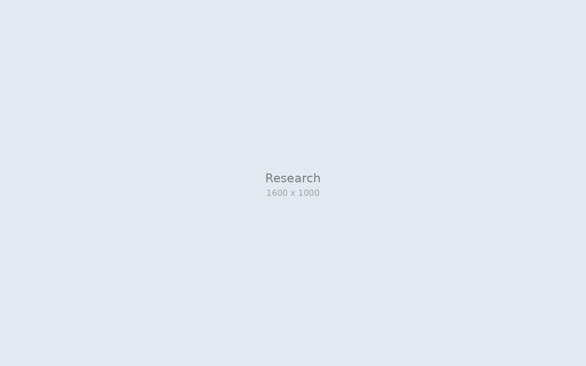
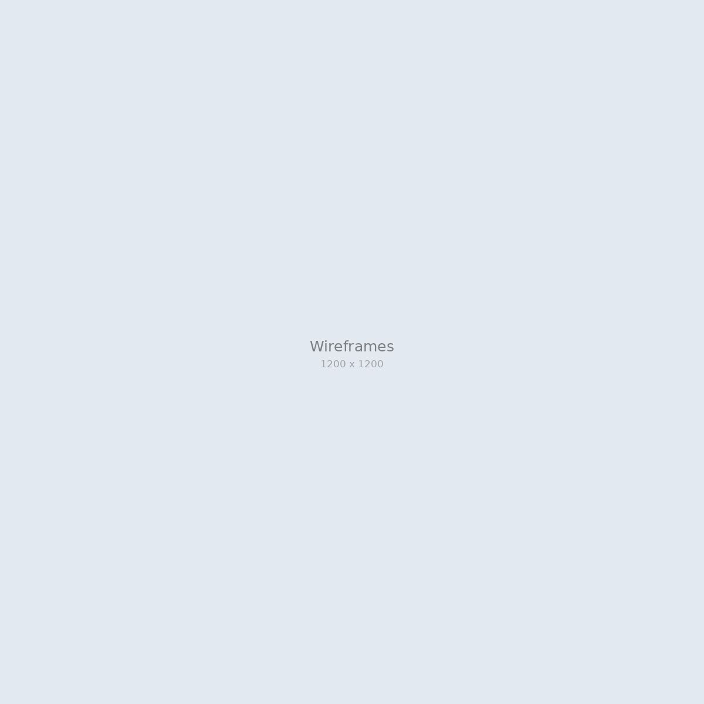
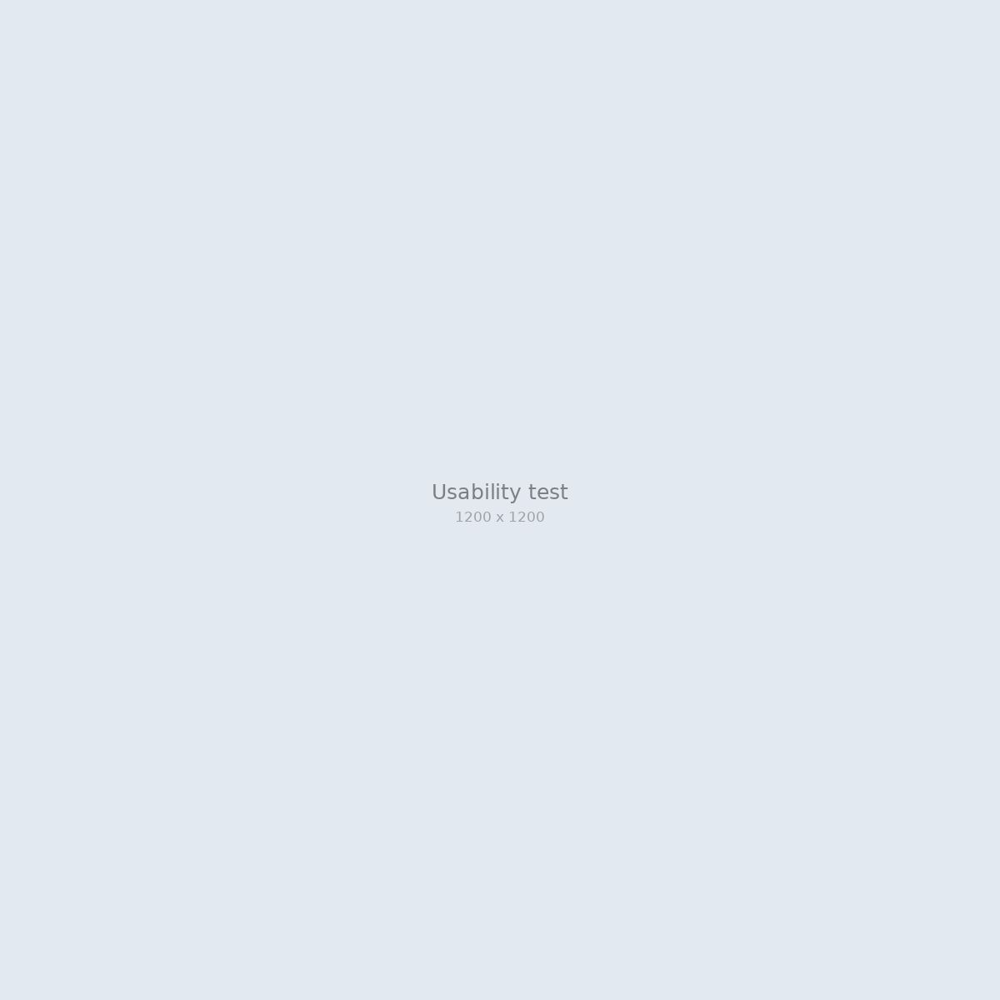
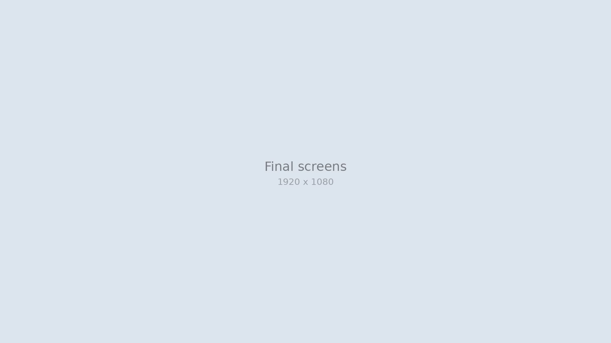

Capstone 2026
A Calmer First Ride
New riders on Jakarta's commuter rail rarely get lost on the route. They get anxious at the transfer: which platform, which direction, and when to get off. We designed a trip view that walks riders through each step of their first ride.
I led interaction design and the prototype, pulling the team's research into one mobile flow and updating it before every round of testing.
- My role
- Product designer
Prototype lead - Timeline
- Feb - Jun 2026
- Team
- 3 designers
1 researcher - Tools
- Figma, FigJam, Maze
A system that assumes you already know it
The commuter line moves huge crowds across Jabodetabek every day. Route maps show lines and colors, but signs differ between stations and announcements are easy to miss in a crowd. Many first-time riders are students or workers who just moved to the city.
The route was never the hard part
Existing apps answer "which train?" well. What they miss is the few minutes between trains, when a rider has to find the right platform before the doors close.
First-time riders were not confused by the route. They were anxious about the transfer.
Riding along with new commuters
We joined new riders on real trips, interviewed station staff, and read through app store reviews of existing transit apps. Three patterns kept coming up: riders checked their phones right before a transfer, platform numbers mattered more than line colors, and people wanted reassurance that they were still on the right train.

From a map to a sequence of steps
We turned the trip into a sequence that follows the rider from station to station, and focused every decision on the transfer moment.
- 01
Map-first or step-first
We prototyped both. Riders understood the step view faster and looked at their phones less while walking.
- 02
Designing for the platform
Each step shows the platform number in large type, the direction of the train, and how many stops remain.
- 03
Building mobile-first
I kept one shared prototype in Figma and sent a fresh version to testers before every session.


Fewer wrong platforms, but timing still mattered
We tested with new riders on real trips. Most could finish a trip with two transfers without asking anyone for help, but some missed their stop when the train was crowded. That led to the arrival reminder.
A trip view that walks with you
The final design pairs a step-by-step trip view with a gentle vibration one stop before the rider's station.

A shared picture of the first ride
We presented the prototype and research at our capstone showcase. The ride-along findings became the reference our team used for every later design decision.
Test in the crowd, not just the lab
With more time, I would test Lintas during rush hour, when crowds change how people hold and use their phones. I also learned to share rough prototypes earlier. Our weekly tests caught problems that weeks of discussion did not.
thanks for reading (•‿•)